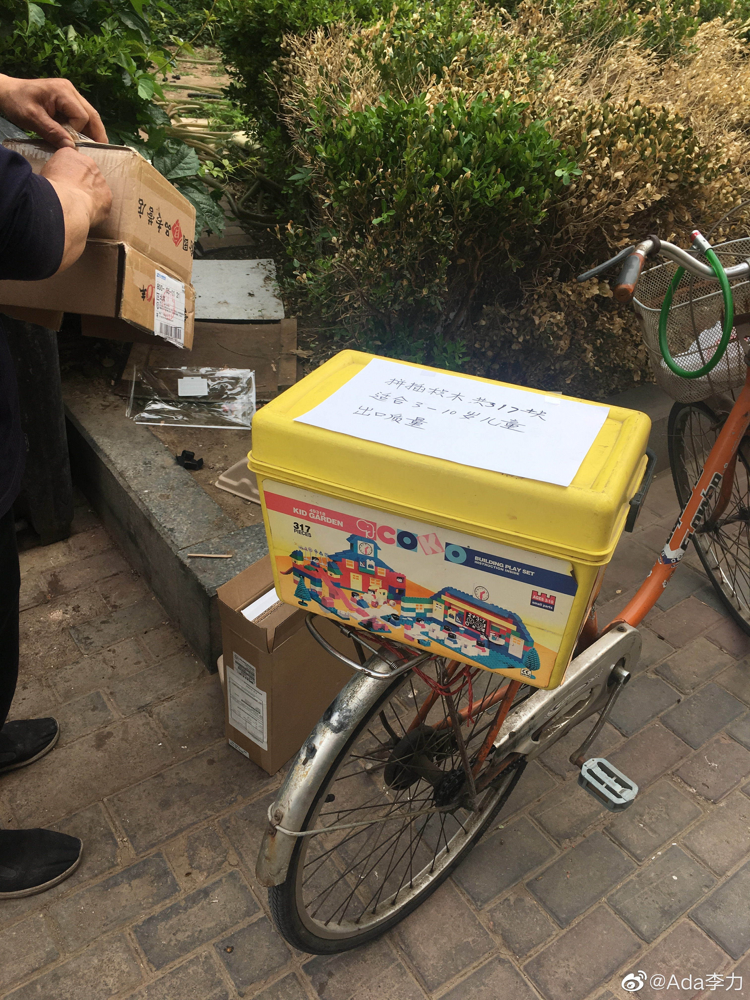

姣姣玩过的这套积木，我也很喜欢，也有特别的意义，是慧慧玩过后，从上海带到北京，又送给姣姣的，记得2000年前的购买价格是500多元。这是我一直没送人扔储藏室的缘故。
没想到闲鱼上免费送都没有送出去。直接送到楼下的垃圾箱旁，立刻被人捡走。😂
听到这样的处理结果，慧慧表示捡到的人有福了，慧慧妈妈(我大姐)还是有些不高兴，说她可以拿回去留作传家宝。
所以呢，断舍离其实挺难。
没想到闲鱼上免费送都没有送出去。直接送到楼下的垃圾箱旁，立刻被人捡走。😂
听到这样的处理结果，慧慧表示捡到的人有福了，慧慧妈妈(我大姐)还是有些不高兴，说她可以拿回去留作传家宝。
所以呢，断舍离其实挺难。


- 